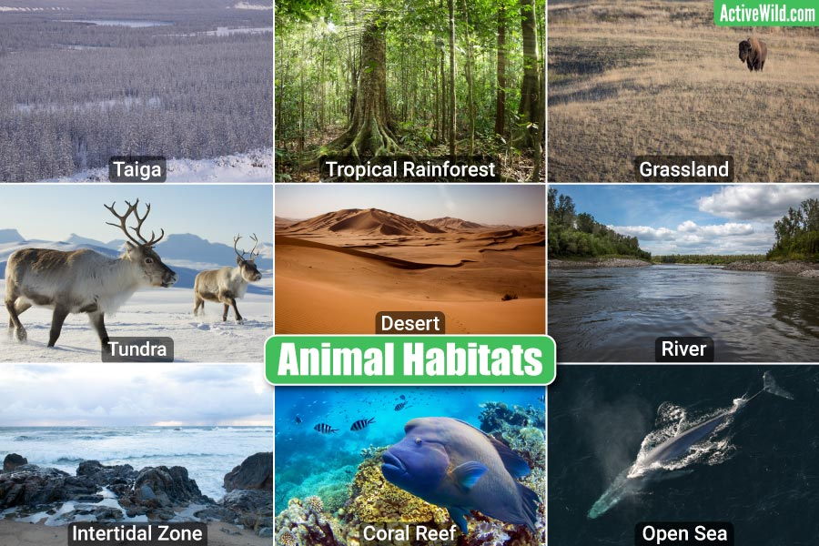
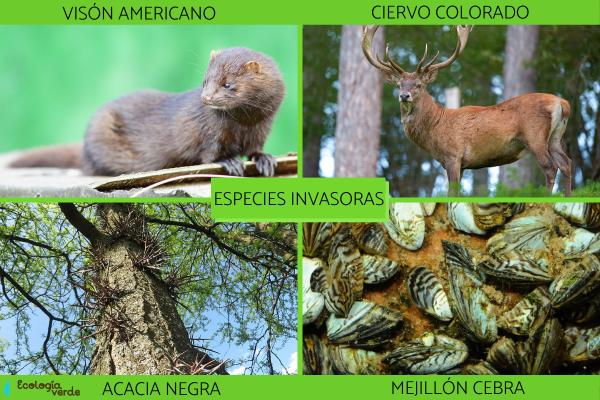
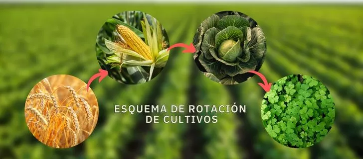

¿Qué Podemos Hacer?
Podemos apoyar compartiendo la infomación en nuestras comunidades y redes sociales. Tambien podemos contribuar con donaciones y voluntariado.
Protección de hábitats:
Apoyando económicamente, compartiendo en tus redes la información de Asociaciones que se dedican a la creación y gestión de áreas protegidas, corredores ecológicos y zonas de restauración de ecosistemas.
Control de especies invasoras:
Debemos informarnos, aprender e implementar medidas para prevenir la introducción y propagación de especies invasoras, tanto en tierra como en agua.
Sostenibidad en la producción de alimentos:
Necesitamos aprender y enseñar prácticas agrícolas sostenibles que minimicen el impacto en la biodiversida, como la agricultura ecológica y la rotación de cultivos.
Regulaciones y políticas:
Nececitamos que hayan leyes y regulaciones bien definidas y estrictas; que protejan la biodiversidad y promuevan la sostenibidad, incluyendo la gestión del agua, de residuos y la lucha contra la contaminación
Inversión en investigación:

Existen centros de investigación científica sobre la biodiversidad y los ecosistemas, buscando soluciones para su conservación. Requieren apoyo económico del gobierno y de quien desee aportar para continuar con sus objetivos.
¿Quiéres leer mas sobre el ODS 15? haz clik aqui